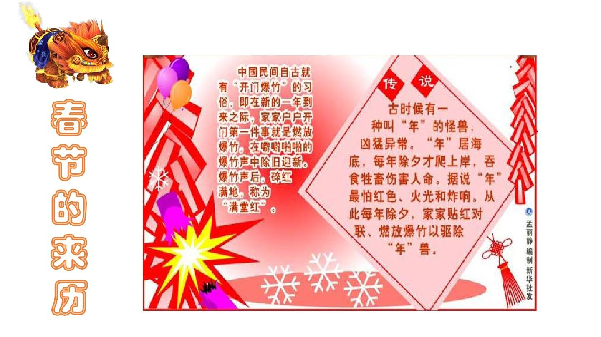

|  | |||
| 来 历 | 习 俗 | 精 神 | 传 承 |
春节 春节（Spring Festival），即中国农历新年（Chinese New Year），俗称“新春”“新岁”“岁旦”等，又称“过年”“过大年”，是集除旧布新、拜神祭祖、祈福辟邪、亲朋团圆、欢庆娱乐和饮食为一体的民俗大节。 春节历史悠久，起源于早期人类的原始信仰与自然崇拜，由上古时代岁首祈岁祭祀演变而来。万物本乎天、人本乎祖，祈岁祭祀、敬天法祖，报本反始也。春节的起源蕴含着深邃的文化内涵，在传承发展中承载了丰厚的历史文化底蕴。在春节期间，全国各地均有举行各种庆贺新春活动，带有浓郁的各地地方特色。 [1] [77-78] 在早期观象授时时代，依据斗转星移定岁时，“斗柄回寅”为岁首。“斗柄回寅”春回大地、终而复始、万象更新，新的轮回由此开启。在传统的农耕社会，春回大地的岁首具有重要意义，衍生了大量与之相关的岁首节俗文化。在历史发展中虽然使用历法不同而岁首节庆日期不同，但是其节庆框架以及许多民俗沿承了下来。在现代，人们把春节定于农历正月初一，但一般至少要到正月十五新年才算结束。 百节年为首、四季春为先，春节是中华民族最隆重的传统佳节。受到中华文化的影响，世界上一些国家和地区也有庆贺新春的习俗。据不完全统计，已有近20个国家和地区把中国春节定为整体或者所辖部分城市的法定节假日。春节与清明节、端午节、中秋节并称为中国四大传统节日。 春节民俗经国务院批准列入第一批国家级非物质文化遗产名录。 |
|||
| cshustgwq6651 | |||